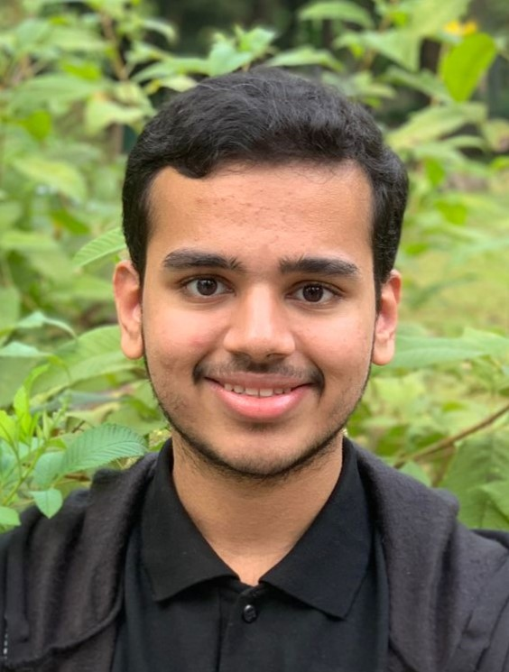

Hello! I'm Ashwin Abraham, a Third Year Undergraduate Student studying Computer Science at IIT Bombay. You can contact me at:

ashwinabraham@cse.iitb.ac.in
210050023@iitb.ac.in
ashwinabraham256@gmail.com
You can also see more of my online presence here:
GitHub
Here
is a list of the courses I have taken/am taking.